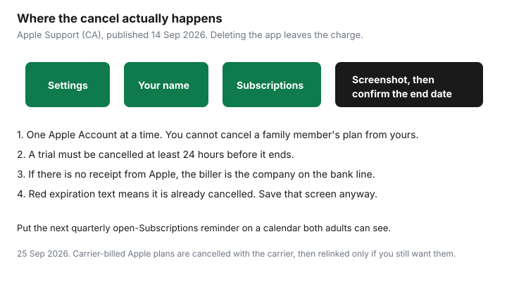

Subscriptions · Canada
How to Find and Cancel Every Apple Subscription on iPhone in Canada
Forgotten Apple trials renew because they do not look like a bill. The charge says APPLE.COM/BILL, the app may already be deleted, and a teen’s Ask to Buy approval from March is still a subscription in September. The fix is a screen Apple already provides, opened on every Apple Account that can spend, with a screenshot before anyone taps cancel.
This is the iPhone pass. Android is the Google Play guide. The wider export of bank, card, and carrier charges is the subscription audit. Prices for the plans you might be sharing are date-stamped on the Family Sharing guide.
Disclosure: This page has no natural affiliate offer. Education only. We do not claim an Apple partnership. No card rankings.
Key takeaways
- Settings, your name, Subscriptions. Screenshot the list before you cancel. Scroll for the cancel button. Red expiration text means it is already off.
- Cancel a trial at least 24 hours before it ends. Apple published that rule on 14 Sep 2026.
- You cannot cancel a family member’s subscription from your phone. The organizer still reviews what their own payment method is buying, including shared plans and approved kid purchases.
- No Apple receipt means the app bills you directly. Check the card. Amazon Prime, on Amazon’s own fee page used 24 Sep 2026, is $9.99 a month or $99 a year before tax, and it will not appear in this Apple list.
- Drop an iCloud+ tier only after used space fits the smaller plan. Reopen Subscriptions every quarter.
Open Settings then Your Name then Subscriptions and screenshot the full list
Apple’s Canadian support page “Cancel a subscription from Apple,” published 14 Sep 2026, gives the iPhone path in four taps. Open Settings. Tap your name. Tap Subscriptions. Tap the subscription. Tap Cancel Subscription. You may have to scroll to find the button. If there is no cancel button, or you see an expiration message in red, the subscription is already cancelled. Screenshot that red text too. It is the proof.

Screenshot the full list before you cancel anything. One screen may not be enough. Scroll and shoot again. The screenshot is what you compare with the credit-card statement later. Write the date in the photo album or the household folder. If Subscriptions is empty and the card still shows Apple, you are in the wrong Apple Account. Sign out is the wrong next step if you do not know the password for the right one. Search email for “receipt from Apple” or “invoice from Apple,” which is the step Apple prints for a missing subscription, and read which account paid.
Cancel each unused trial or app; confirm end date shown
Work down the list. For each row, name who uses it. If nobody has opened it in 30 days and it is not a seasonal tool you already dated, cancel it. After you tap cancel, read the end date Apple shows. Access usually continues until that date. You have already paid for it. Do not delete the app and assume the date moved.
Trials are stricter. Apple says if you signed up for a trial and do not want it to renew, cancel at least 24 hours before the trial ends. A calendar alert on the renewal morning fails that test. Set the alert seven days out, which is the household rule on the trial checklist, and cancel the day the alert fires. A zero-cost week that becomes a $9.99 month is still a successful cancel if the end date is before the charge.
Confirm in the list that the row now shows an expiration. If the button was “cancel” and the row still shows a next billing date with no expiration, you did not finish. Some screens ask you to confirm a second time. Finish that tap. Then leave the screenshot of the expiration in the same folder as the first screenshot of the list.
Family Organizer view: kids and shared purchases you are paying for
The organizer’s Subscriptions list shows the shared plans the organizer bought: Apple Music Family, iCloud+, Apple One, Arcade, and app subscriptions purchased with that Apple Account. It does not show a subscription bought on a spouse’s personal Apple Account. Apple’s cancel page says you cannot cancel a family member’s subscription. Ask each adult to open the same screen on their phone while you are in the room. Five minutes times the number of adults is the whole job.
Kids are different when Ask to Buy and Purchase Sharing are on. The organizer’s payment method is billed for eligible purchases, which the Family Sharing guide sets up on purpose. Look for app subscriptions you approved and no longer recognise. Cancel the ones the household does not use. Leave the ones a child still opens, and write the child’s name next to the amount. A shared iCloud+ or Music plan should appear once. A second personal Music plan on a teen’s account is the duplicate to cancel on their phone, not a second copy to keep “just in case.”
Apps that bill outside Apple—still check bank statements
Apple’s own page says that if you cannot find an Apple receipt, you may have bought the subscription from another company. The bank or card line names that company. Cancel there. The Apple list will stay empty, and the charge will continue, until you do.
Three Canadian examples that routinely sit outside this screen. Amazon Prime, on the fee page used for our Prime guide on 24 Sep 2026, is $9.99 a month or $99 a year before tax, managed in the Amazon account, not in Apple Subscriptions. Netflix billed by Netflix is cancelled on Netflix; Netflix billed by a TV partner is cancelled with the partner. Adobe bought from Adobe follows Adobe’s terms, including a possible 50 percent early-termination fee on an annual plan billed monthly, on the terms page updated 17 Apr 2026. Adobe bought through the App Store is cancelled in this Subscriptions list, and Apple’s cancel page says a carrier-billed Apple subscription is cancelled with the carrier. The statement hunt is the list of descriptors. This iPhone screen is only the Apple slice.
Turn off unused iCloud+ storage tiers you no longer need
iCloud+ is the subscription people are afraid to touch because the warning mentions photos. Read used space first. Apple’s Canada table, published 16 Sep 2026, lists 50 GB at $1.29, 200 GB at $3.99, 2 TB at $12.99, 6 TB at $39.99, and 12 TB at $79.99. If the family uses 40 GB, the 2 TB plan is the wrong tier. If the family uses 180 GB, 50 GB is the wrong downgrade.
Change the plan only after the number fits. Download a copy of photos you care about, delete device backups for phones you no longer own, and empty large mail if it lives in iCloud. Then pick the smaller tier in the iCloud storage screen and confirm the new price. Do not turn off iCloud Photos in a panic to “save the $12.99” before the download finishes. The free tier waiting underneath is 5 GB. A shared family pool is one plan, described in the storage guide. Cancelling a personal 200 GB plan because the family 2 TB plan now covers that person is the right cancel. Cancelling the only plan is not.
Quarterly calendar reminder to re-open the Subscriptions screen
New trials appear between audits. Put a repeating event on a calendar both adults see: “Open Apple Subscriptions on every Apple Account.” Quarterly is enough, plus a one-off seven days before any annual renewal you chose to keep. The event name should include the amount and the account, so it is not a vague “check Apple.”
When it fires, repeat the screenshot. Compare it with the last one. Anything new gets a user name or a cancel that day. Then look at the card. A subscription cancelled in Apple should not post a new APPLE.COM/BILL for that item after the end date. If it does, the screenshot of the red expiration text is what you send Apple, which is the same proof habit as the cancel-proof guide.
Sources & date stamps
- Apple Support (CA), “Cancel a subscription from Apple,” published 14 Sep 2026: iPhone path Settings, your name, Subscriptions, Cancel Subscription; trial cancelled at least 24 hours before it ends; you cannot cancel a family member’s subscription; no Apple receipt means another company billed you; carrier-billed plans are cancelled with the carrier.
- Apple Support (CA), iCloud+ pricing, published 16 Sep 2026: Canada tiers from $1.29 for 50 GB to $79.99 for 12 TB. Free iCloud is 5 GB.
- Amazon Prime $9.99 a month or $99 a year before tax: Amazon.ca fee page as used on the Prime guide, 24 Sep 2026. It is not an Apple subscription.
- Adobe annual billed monthly, 50 percent of the remaining balance may apply: Adobe terms help updated 17 Apr 2026, used on the Adobe guide 24 Sep 2026. That fee is for plans bought from Adobe.
Frequently asked questions
Does deleting an iPhone app cancel the subscription?
No. Apple’s cancel page, published 14 Sep 2026, tells you to cancel in Settings, your name, Subscriptions. If the button is missing and you see red expiration text, it is already cancelled. If there is no Apple receipt, another company is billing you.
How early do I cancel an Apple trial?
At least 24 hours before the trial ends. A reminder on the morning it renews is too late for that rule.
Can I cancel my child’s subscription from my iPhone?
Only if the charge is on your Apple Account. Apple says you cannot cancel a subscription that belongs to a family member’s Apple Account. They have to open Subscriptions on theirs.
What if the charge says Apple but I do not recognise the app?
Search email for a receipt from Apple and see which Apple Account paid. Then open Subscriptions on that account. A bank line with no Apple receipt is a different merchant.
Will downgrading iCloud+ delete my photos?
Not immediately, and not as a plan. If you pick a tier smaller than the space you use, Apple warns you. Download or delete until you fit, then change the plan. The free tier is 5 GB.